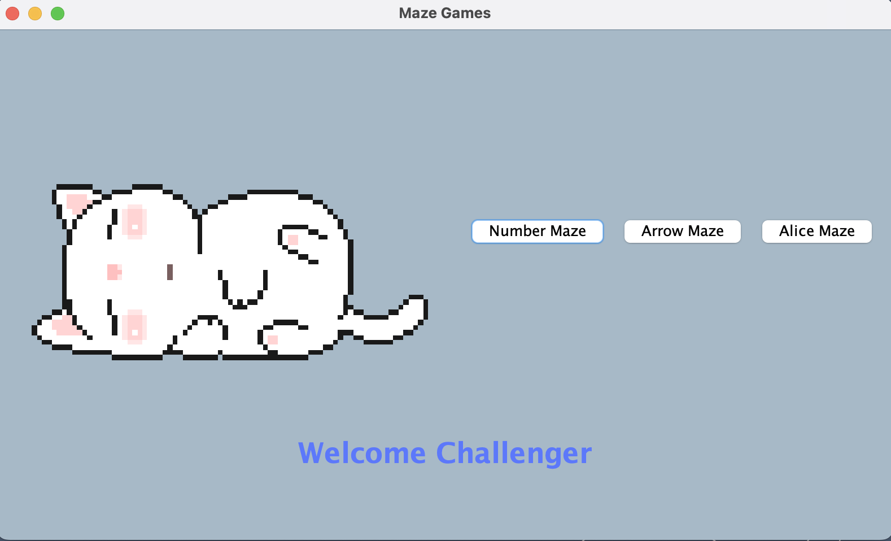

Projects

Logic Maze
Made for COSC112, these logic maze games mainly demonstrate inheritance and includes features like an
undo button and a maze solver using breadth first search that works for all my mazes from any
position you are at in the game. The menu interface also has a cute cat gif.